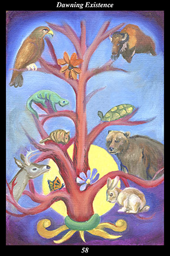

 | IMAGE As the sun rises behind it, a flowering tree branches out into different kinds of animals. |
INTERPRETATION
This hexagram depicts the spirit of the flower, which brings all the potential of creation to full bloom. The rising sun symbolizes the eternal renewal of the world. The tree branching out into different animals is a symbol of the multiplicity of forms making up the single body of creation. The tree’s flowers symbolize the perfection of each passing moment of eternity. Taken together, these symbols mean that you successfully complete your task because you further the interests of those you serve.
ACTION
The spirit warrior wins the sacred war against the enemy-within by emulating the loving-kindness of land and water. Seeds of great trees may be brought forth in great number but they amount to nothing unless they fall upon fertile soil and receive proper watering. Similarly, seeds of great deeds may arise in great number but if such visions are not treated reverentially and nurtured carefully, then they eventually come to naught. It is for this reason that the spirit warrior receives every idea and inspiration and motive just as the land receives each seed and just as water nourishes every plant: because no one can say which vision is destined to produce a great deed, every thought and feeling and action needs to be treated with the respect due a prodigy of incalculable potential. When land and water become our teachers, then we foster spirit everywhere we touch it. To be truly beneficial, however, our fostering has to be spontaneous, natural, and without self-interest: following the model of earth and water, we bring seeds to completion without any contrived actions, conscious influence, or ulterior motives. This is a time for revisiting the issue of service and expanding your definition of who you serve and how you best serve them: because the need of those you serve has changed nearly as much as your own understanding, this is a propitious time to rededicate yourself to bringing
benefit to others with ever-growing joy and devotion. You succeed because you strive for others’ success: because you open your heart and embrace all you touch, you are blessed with the resourcefulness to bring your task to successful completion.
INTENT
A heart that is accepting and caring is the sign of an untroubled spirit. Just as land and water love every seed equally, we must open our spirit to the whole of existence that is blossoming around us. Just as land and water are themselves seeds within the greater earth and sky, we must allow our spirit to be loved by the greater spirit of existence that is renewing itself everywhere at all times. You germinate, take root, grow, flower, and put forth your own seeds because you serve as land and water for others: because you sense the flowering of perfection all around you, you are blessed with an understanding of your task that is renewing itself every lifetime and every generation.
SUMMARY
The tests are passed, you are entering a long period of success and contentment. The trials are over, you have the freedom to make a valuable contribution to the lives of others. Like a commoner one day appointed adviser to the king and queen, your concerns and demeanor change overnight. Even this time of fulfillment cannot last forever, though, so make it a time you can be proud of forever.
THE LINE CHANGES
1° Before taking up the other’s work, make yourself strong and stable. Do not ignore the symptoms of physical or emotional distress that could worsen with time. Take care of yourself first so that your service to the higher will not be interrupted later.
2° Your bond with the other is unbreakable, forged as it is out of heartfelt devotion to a superior vision. Take up this cause with unadulterated enthusiasm and confidence, bringing the full weight of your experience and will to bear. Act with ease and spontaneity—you have found your path in life.
3° Investing your time and effort in this project will ultimately be rewarding even though nothing concrete will materialize soon. Work to increase the feasibility of the endeavor reaching many people and benefiting their lives. Do not lose faith in your partnership.
4° If you merely try to protect your own interests, the alliance will fall apart. If you feel you are being taken advantage of, or that serving others does not fulfill your own needs, then all your good efforts will be negated by resentment. Be genuinely grateful for this opportunity and things will improve.
5° Do not compete for recognition or status—yours is the power to bring matters to fruition, not the power to overwhelm. You are an essential part of an important undertaking—do not get confused or distracted by success. The seeds of future happiness are in the very fruit ripening before you.
6° You can go no further with this work without going back and taking up a serious study of the issues at hand. Stop working on this endeavor until you have absorbed a whole new program of learning. There may be new projects to undertake before returning to complete this one.